2023年北京中考数学 第8题 解析
8. 如图，点A、B、C在同一条线上，点B在点A，C之间，点D，E在直线AC同侧， ，
， ，
， ，连接DE，设
，连接DE，设 ，
， ，
， ，给出下面三个结论：①
，给出下面三个结论：① ；②
；② ；③
；③ ；
；
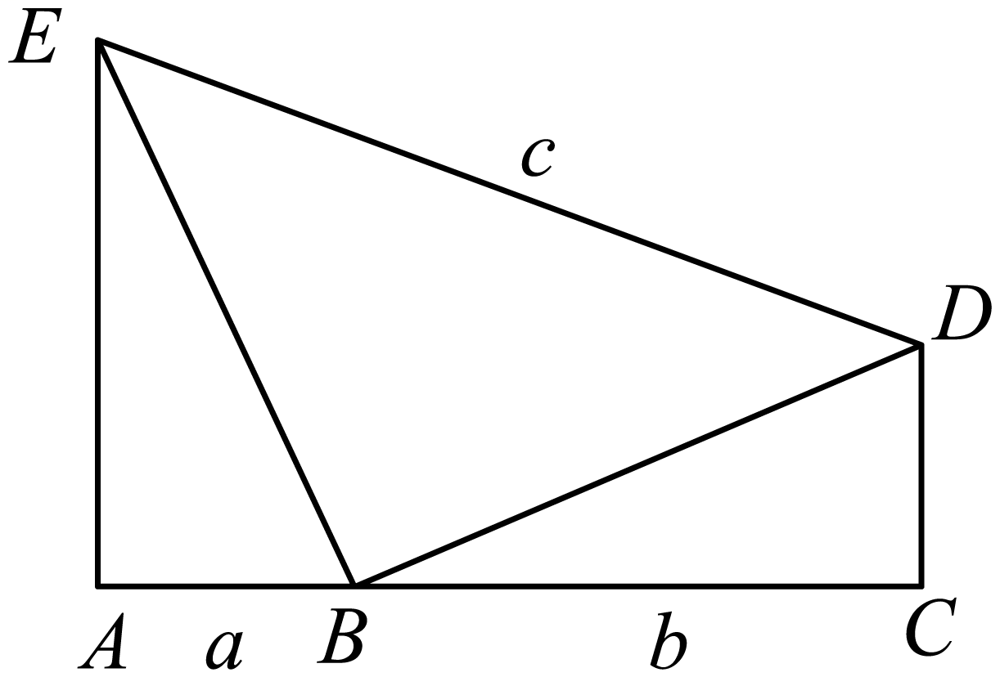
上述结论中，所有正确结论的序号是（ ）
A. ①②B. ①③C. ②③D. ①②③
【答案】D
【解析】
【分析】如图，过
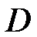
作于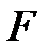
，则四边形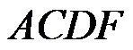
是矩形，则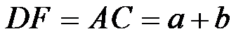
，由，可得，进而可判断①的正误；由，可得，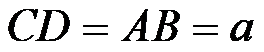
，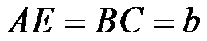
，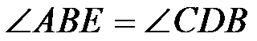
，则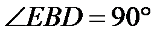
，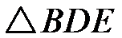
是等腰直角三角形，由勾股定理得，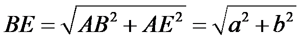
，由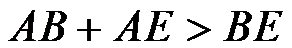
，可得，进而可判断②的正误；由勾股定理得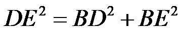
，即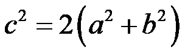
，则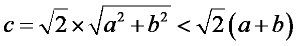
，进而可判断③的正误．【详解】解：如图，过作于，则四边形是矩形，
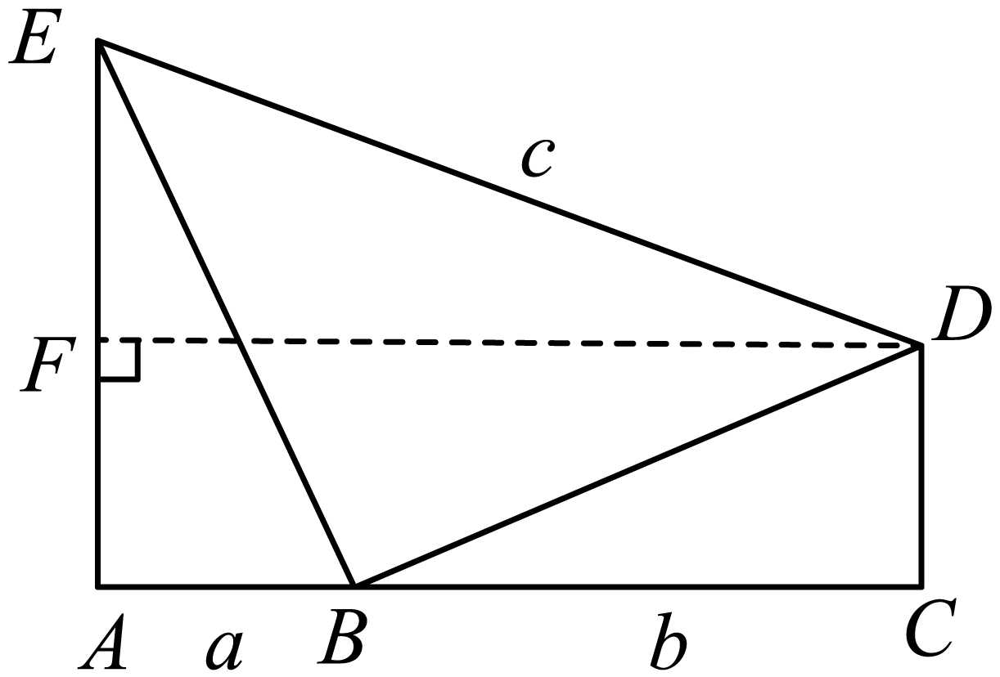
∴，
∵，
∴，①正确，故符合要求；
∵，
∴，，，，
∵
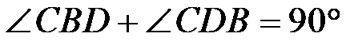
，∴
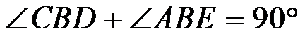
，，∴是等腰直角三角形，
由勾股定理得，，
∵，
∴，②正确，故符合要求；
由勾股定理得，即，
∴，③正确，故符合要求；
故选：D．
【点睛】本题考查了矩形的判定与性质，全等三角形的性质，勾股定理，等腰三角形的判定，不等式的性质，三角形的三边关系等知识．解题的关键在于对知识的熟练掌握与灵活运用．
第二部分 非选择题
二、填空题（共16分，每题2分）